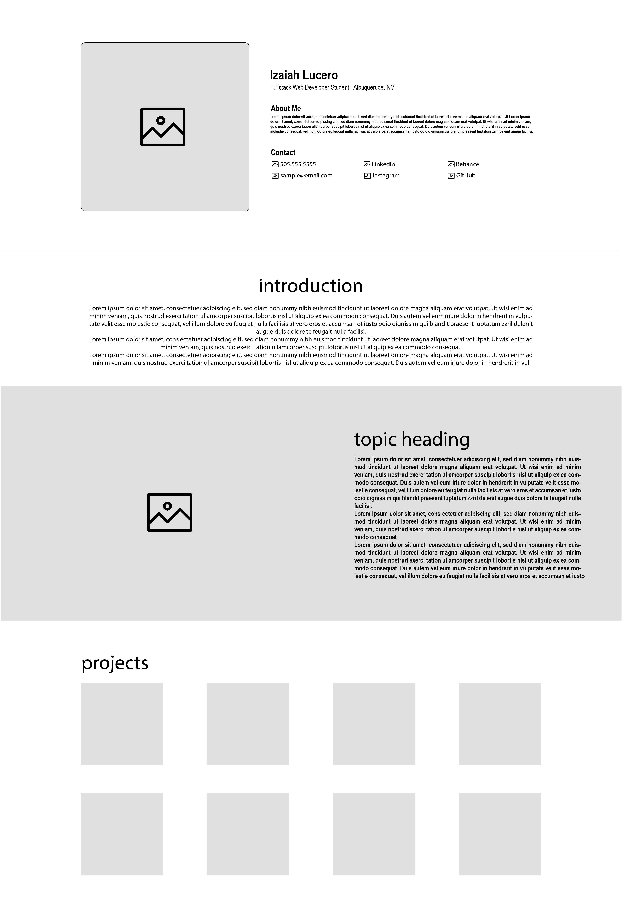

I want to build the site utilizing a modular design. With content and sections have clear breaks. This concept will be present in the below content breakout.
Name, current city and state, and a paragraph where I introduce myself.
This section will contain all of my contact info including email, phone number, social media accounts, etc.
In this section I will utilize the list of soft skills that I have that Esteban Martinez has told us to make sure we highlight for future employers. I'm going to develop icons for each soft skill so that I can then use that icon in my gallery and assign the 3 main skills required to complete each of my projects.
In this section I will utilize the list of hard skills that I've obtained over the course of my work history. Similiar to my soft skills section I wanna develop corresponding icons that I can then assign to the projects completed in my gallery and highligh how those skills were used on that project.
For the gallery I wanna to use a pin board style. And when the user clicks on one of the screenshots in the gallery it will open that project and on the left hand side the user can see the a description of the project, soft and hard skills used to complete the task and I'm also trying to decide if I want to include the projects concept plan.
